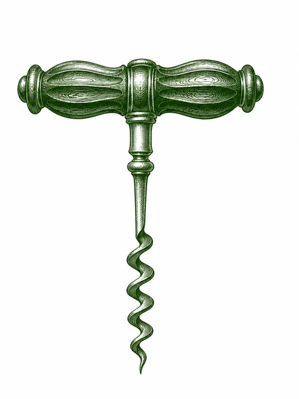

Uma carta da Vinoteca.
A casa
Boas-vindas à Vinoteca del Sul. Para apresentar a nossa loja, queremos contar por que um vinho entra na nossa seleção.
Olhamos para a origem da uva e para o trabalho de quem fez o vinho. Num branco, nos atrai o frescor que realça a fruta. Num tinto que passou por madeira, apreciamos quando as notas de especiarias convivem com o sabor da uva.

Próximo capítuloSão Paulo
Atendemos exclusivamente em São Paulo. Por aqui, gostamos de conhecer os vinhos que já fazem parte da sua mesa.
Que garrafa você costuma abrir no almoço de domingo? Saber o que faz dela a sua preferida nos ajuda a reconhecer, entre os rótulos da casa, aquele que vale a pena lhe apresentar.
 Próximo capítulo
Próximo capítulo Contato
Foi um prazer receber você por aqui. Quando quiser conversar sobre vinho, escreva para a gente pelo WhatsApp.
Um abraço,
Vinoteca del Sul